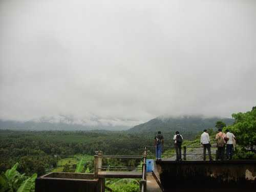
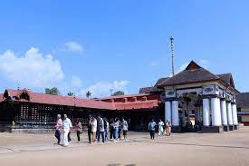

Kottathavalam

Nadukani

Illikal Kallu

Marmala Waterfalls

Kottayam is a city in the Indian state of Kerala. It is located in central Kerala and is also the administrative capital of Kottayam district. Bordered by the lofty and mighty Western Ghats on the east and the Vembanad Lake and paddy fields of Kuttanad on the west, Kottayam is a land of unique characteristics. Panoramic backwater stretches, lush paddy fields, highlands, hills and hillocks, extensive rubber plantations, places associated with many legends and a totally literate people have given Kottayam District the enviable title: The land of letters, legends, latex and lakes. The city is an important trading center of spices and commercial crops, especially rubber. Most of India’s natural rubber originates from the acres of well-kept plantations of Kottayam, also home to the Rubber Board. Kottayam is also called as “Akshara Nagari” which means the “city of letters” considering its contribution to print media and literature.
Kottayam Town is the first town in India to have achieved 100% literacy (a remarkable feat achieved as early as in 1989). English education in South India did actually start at the Old Seminary here at Kottayam in 1813. The first printing press in Kerala was established (CMS Press) here in 1821 by Rev.Benjamin Baily. The first college in the State (CMS College) was also started here at Kottayam in 1840. Maiden printed Malayalam-English and English-Malayalam Dictionaries were published from Kottayam in 1846 and 1847 respectively. The first and only Cooperative Society of writers, authors and publishers (SPCS), for publishing books and periodicals was set up here in 1945. Kottayam is the hometown of a vast number of books and periodicals and is the center of publishing business in the State. Kottayam is the first town in India selected by the Ministry of Environment and Forests, Government of India to be transformed as an Eco City. The Sri K R Narayanan, the former President of India hails from Kottayam District. Kottayam is the ideal take off point for visits to Peermade, Munnar, Thekkady, Ernakulam and the temple city, Madurai. It is also a gateway to the pilgrim centers of Sabarimala, Mannanam, Vaikom, Ettumanoor, Bharananganam, Erumeli, Manarcaud, and so on.
Kottayam literally means the interior of a fort – Kotta + Akam. Rulers of Munjanad and Thekkumkur had their headquarters at Thazhathangadi in the present Kottayam town. Marthanda Varma of Travancore attacked Thekkumkur and destroyed the palace and the Thaliyil fort. The remnants of the palaces and forts are still seen here.
The present Kottayam district was previously a part of the erstwhile princely state of Travancore. Earlier, the Travancore state consisted of two revenue divisions viz. the southern and northern divisions, under the administrative control of a ‘Diwan Peshkar’ for each. Later in 1868 two more divisions Quilon (Kollam) and Kottayam were constituted. The fifth division Devikulam came next but only for a short period, which in course of time, was added to Kottayam. At the time of the integration of the State of Travancore and Cochin (Kochi) in 1949, these revenue divisions were renamed as districts and the Diwan peshkars gave way to District Collectors, paving the way for the birth of the Kottayam District in July 1949.